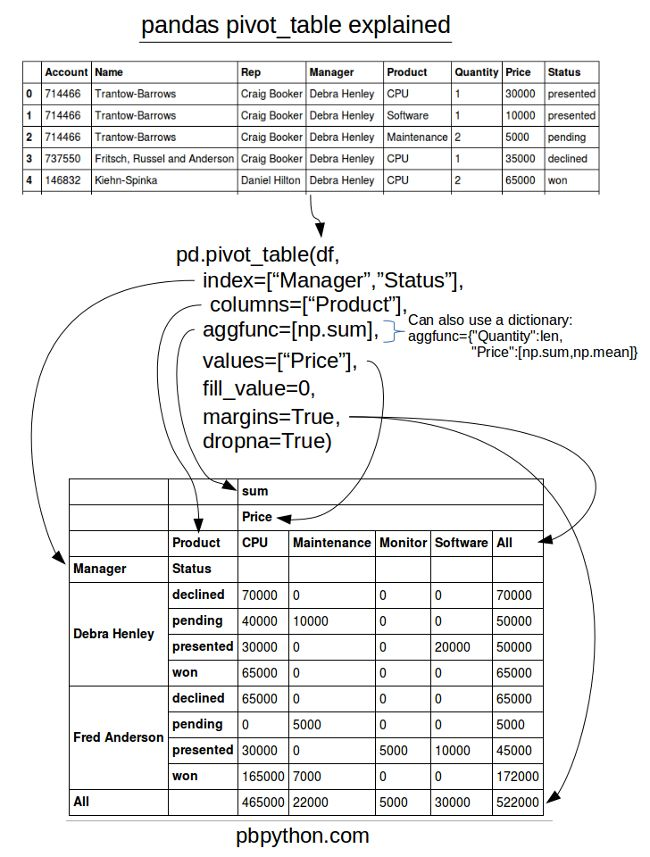

DataAnalysis For Python
Table of Contents
1 numpy
1.1 ndarray
import numpy as np py_array = [1, 2, 3, 4, 5] np_array = np.array(py_array) np_array.shape #=> (5,) np_array.dtype #=> dtype('int64') py_array = [[1, 2, 3, 4], [5, 6, 7, 8]] np_array = np.array(py_array) np_array.shape #=> (2, 4) np_array.ndim #=> 2 np.zeros(10) #=> array([ 0., 0., 0., 0., 0., 0., 0., 0., 0., 0.]) np.ones((2, 3)) #=> array([[ 1., 1., 1.], [ 1., 1., 1.]]) np.empty((2, 3, 2)) #=> # array([[[ 0., 0.], # [ 0., 0.], # [ 0., 0.]], # [[ 0., 0.], # [ 0., 0.], # [ 0., 0.]]]) array = np.arange(5) #=> array([0, 1, 2, 3, 4]) masked_array = np.ma.masked_array(array, array<3) #=> [-- -- -- 3 4] np.random.randn(2, 3) np_array = np.array([1, 2, 3], dtype=np.int32) np_array = np_array.astype(np.float64) np_array.dtype #=> dtype('float64') x, y=np.meshgrid(np.arange(2),np.arange(2)) #x=> # array([[0, 1], # [0, 1]]) #y=> # array([[0, 0], # [1, 1]])
1.1.1 Strides
indicating the number of bytes to "step" in order to advance one element along a dimension, \(3 * 4 * 5\) array of float64(8-bytes) has strides (160, 40, 8)
1.1.2 Supported dtype
- int8, uint8, int16, uint16, int32, uint32, int64, uint64
- float16, float32, float64, float128
- complex64, complex128, complex256
- bool
- object
- string_
- unicode_
1.1.3 Creating
| Function | Description |
|---|---|
| array | Convert input data (list, tuple, array, or other sequence type) to an ndarray |
| asarray | Convert input to ndarray, but do not copy if the input is already an ndarray |
| arange | Like the built-in range but returns an ndarray instead of a list. |
| ones, ones_like | Produce an array of all 1’s with the given shape and dtype. |
| zeros, zeros_like | Produce an array of all 0’s with the given shape and dtype. |
| empty, empty_like | Create new arrays by allocating new memory |
| eye, identity | Create a square N x N identity matrix (1’s on the diagonal and 0’s elsewhere) |
1.1.4 Indexing
basic indexing
arr = np.array(range(12)).reshape(3,4) # array([[ 0, 1, 2, 3], # [ 4, 5, 6, 7], # [ 8, 9, 10, 11]]) arr[1:, :3] # array([[ 4, 5, 6], # [ 8, 9, 10]])
boolean indexing
flags = np.array([1, 2, 3, 2, 2, 1]) data = np.random.randn(6,2) # array([[ 2.11684529, 1.24861544], # [-0.34817586, -0.59905366], # [-0.84976431, 0.11840417], # [ 1.36648373, 1.33416664], # [ 0.37616856, -0.0032112 ], # [-0.7749904 , -0.60457688]]) flags ==2 # array([False, True, False, True, True, False], dtype=bool) data[flags == 2] # array([[-0.34817586, -0.59905366], # [ 1.36648373, 1.33416664], # [ 0.37616856, -0.0032112 ]]) data[(flags == 3) | (flags == 1), 1:] # array([[ 1.24861544], # [ 0.11840417], # [-0.60457688]]) data[data<0] = 0 # array([[ 2.11684529, 1.24861544], # [ 0. , 0. ], # [ 0. , 0.11840417], # [ 1.36648373, 1.33416664], # [ 0.37616856, 0. ], # [ 0. , 0. ]])
fancy indexing
Fancy indexing is a term adopted by NumPy to describe indexing using integer arrays .
Unlike slicing, always copies the data into a new array .
arr # array([[ 0., 0., 0., 0.], # [ 1., 1., 1., 1.], # [ 2., 2., 2., 2.]]) arr[[2, 1]] # array([[ 2., 2., 2., 2.], # [ 1., 1., 1., 1.]]) arr = np.array(range(12)).reshape(3,4) # array([[ 0, 1, 2, 3], # [ 4, 5, 6, 7], # [ 8, 9, 10, 11]]) arr[[1,2], [2,3]] # array([ 6, 11]) # choose location (1, 2) (2, 3) arr[[1,2]][:, [2,3]] # array([[ 6, 7], # [10, 11]]) arr[np.ix_([1,2], [2,3])] # same effect # array([[ 6, 7], # [10, 11]])
1.1.5 Reshape 1D to 2D
arr = np.array([1,2,3]) arr.reshape((-1, 1)) array([[1], [2], [3]])
1.2 matrix
matrix has two dimensions and implements row-column matrix multiplication
1.3 Conditional Logic
1.3.1 any, all
1.3.2 numpy.where
The numpy.where function is a vectorized version of the ternary expression x if condition else y. numpy.where is quicker than list comprehension.
xarr = np.array([1,1,1,1,1]) yarr = np.array([2,2,2,2,2]) cond = np.array([True, False, True, False, False]) np.where(cond, xarr, yarr) # array([1, 2, 1, 2, 2]) np.where(cond, 4, 3) # array([4, 3, 4, 3, 3])
1.4 Transpose
Simple transposing with .T is just a special case of swapaxes
1.5 Useful functions
1.5.1 Math
| Method | Description |
|---|---|
| sign | Returns on array of 1 and -1 depending on the sign of the values |
| sum | Sum of all the elements in the array or along an axis. Zero-length arrays have sum 0 |
| mean | Arithmetic mean. Zero-length arrays have NaN mean |
| std, var | Standard deviation and variance, respectively, with optional degrees of freedom adjustment |
| min, max | Minimum and maximum |
| argmin, argmax | Indices of minimum and maximum elements, respectively |
| cumsum | Cumulative sum of elements starting from 0 |
| cumprod | Cumulative product of elements starting from 1 |
| abs, fabs | Use fabs as a faster alternative for non-complex-valued data |
| modf | Return factional and integral parts of array as separate array |
| rint | Round elements to the nearest integer, preserving the dtype |
| average | Compute the weighted average along the specified axis. |
| exp | Calculate the exponential of all elements in the input array. |
1.5.2 Linear Algebra
| Function | Description |
|---|---|
| diag | Return the diagonal (or off-diagonal) elements of a square matrix |
| dot | Matrix multiplication |
| trace | Compute the sum of the diagonal elements |
| det | Compute the matrix determinant |
| eig | Compute the eigenvalues and eigenvectors of a square matrix |
| inv | Compute the inverse of a square matrix |
| pinv | Compute the Moore-Penrose pseudo-inverse inverse of a square matrix |
| qr | Compute the QR decomposition |
| svd | Compute the singular value decomposition (SVD) |
| solve | Solve the linear system Ax = b for x, where A is a square matrix |
| lstsq | Compute the least-squares solution to y = Xb |
1.5.3 Random Number Generation
| Function | Description |
|---|---|
| seed | Seed the random number generator |
| permutation | Return a random permutation of a sequence, or return a permuted range |
| shuffle | Randomly permute a sequence in place |
| rand | Draw samples from a uniform distribution |
| randint | Draw random integers from a given low-to-high range |
| randn | Draw samples from a normal distribution with mean 0 and standard deviation 1 (MATLAB-like interface) |
| binomial | Draw samples a binomial distribution |
| normal | Draw samples from a normal (Gaussian) distribution |
| beta | Draw samples from a beta distribution |
| chisquare | Draw samples from a chi-square distribution |
| gamma | Draw samples from a gamma distribution |
| uniform | Draw samples from a uniform [0, 1) distribution |
1.5.4 Set operations
| Function | Description |
|---|---|
| unique(x) | Compute the sorted, unique elements in x |
| intersect1d(x, y) | Compute the sorted, common elements in x and y |
| union1d(x, y) | Compute the sorted union of elements |
| in1d(x, y) | Compute a boolean array indicating whether element of x is in y |
| setdiff1d(x, y) | Set difference, elements in x that are not in y |
| setxor1d(x, y) | Set symmetric differences; elements that are in either of the arrays, but not both |
2 pandas
2.1 Series
Series is a fixed-length ordered dict
2.2 DataFrame
df = pd.DataFrame(np.arange(8).reshape(4,2), columns=['c1', 'c2'], index=['r1', 'r2', 'r3', 'r4']) df.ix['r1'] # retrieve row # c1 0 # c2 1 # Name: r1, dtype: int64 df.ix[['r1','r2']] # c1 c2 # r1 0 1 # r2 2 3 df.T # r1 r2 r3 r4 # c1 0 2 4 6 # c2 1 3 5 7 del df['c2'] df.columns # Index([u'c1'], dtype='object')
2.3 Index
Index objects are immutable, functions as a fixed-size set.
- main type:
Index, Int64Index, MultiIndex, DatetimeIndex, PeriodIndex
| Method | Description |
|---|---|
| append | Concatenate with additional Index objects, producing a new Index |
| diff | Compute set difference as an Index |
| intersection | Compute set intersection |
| union | Compute set union |
| isin | Compute boolean array indicating whether each value is contained in the passed collection |
| delete | Compute new Index with element at index i deleted |
| drop | Compute new index by deleting passed values |
| insert | Compute new Index by inserting element at index i |
| is_monotonic | Returns True if each element is greater than or equal to the previous element |
| is_unique | Returns True if the Index has no duplicate values |
| unique | Compute the array of unique values in the Index |
2.3.1 rename with functions
data.rename(index=str.title, columns=str.upper)
2.4 Functionality
2.4.1 Reindexing
Example:
frame.reindex(columns=['c1', 'c2']) frame.reindex(index=['a', 'b', 'c', 'd'], method='ffill', columns=['c1', 'c2']) frame.reindex(frame2.index, method='ffill') # is similar to frame.ix[['a', 'b', 'c', 'd'], ['c1', 'c2']]
reindex args: index, method, fill_value, limit, level, copy
2.4.2 Drop
frame.drop(['r1', 'r2']) frame.drop(['c1', 'c2'], axis=1)
2.4.3 Selection
Indexing options:
| Type | Notes |
|---|---|
| df[val] | Select column |
| df.loc[val] | Select row |
| df.loc[:, val] | Select column |
| df.loc[val1, val2] | Select both column and row |
| df.iloc[where] | Select row by int position |
| df.iloc[:, where] | Select column by int position |
| df.iloc[where_i, where_j] | Select both column and row by int position |
| df.at[label_i, label_j] | Select a single scalar value by row and column label |
| df.iat[i, j] | Select a single scalar value by int position |
| get_value, set_value | Select single value by row and column label |
2.4.4 Arithmetic
- Basic df1 + df2,
- use add method to fill na values: df1.add(df2, fill_value=0)
- Operation between Dataframe and Series
df = pd.DataFrame(np.arange(6).reshape(3,2), columns=['c1', 'c2'], index=['r1', 'r2', 'r3']) # c1 c2 # r1 0 1 # r2 2 3 # r3 4 5 s = pd.Series([4,5], index=['c1', 'c2']) # c1 4 # c2 5 # dtype: int64 df + s # c1 c2 # r1 4 6 # r2 6 8 # r3 8 10 s2 = pd.Series([1,2,3], index=['r1', 'r2', 'r3']) # r1 1 # r2 2 # r3 3 # dtype: int64 df.add(s2, axis=0, fill_value=0) # c1 c2 # r1 1 2 # r2 4 5 # r3 7 8 df['sum_c'] = df.eval('c1+c2') # c1 c2 sum_c # r1 0 1 1 # r2 2 3 5 # r3 4 5 9
2.4.5 Broadcasting
frame=pd.DataFrame(np.arange(12).reshape((4,3)), columns=list('bde'), index=list('1234')) series = frame.ix[0] frame - series #=> # b d e # 1 0 0 0 # 2 3 3 3 # 3 6 6 6 # 4 9 9 9 series2 = pd.Series(range(3), index=list('bef')) frame + series2 #=> # b d e f # 1 0.0 NaN 3.0 NaN # 2 3.0 NaN 6.0 NaN # 3 6.0 NaN 9.0 NaN # 4 9.0 NaN 12.0 NaN
2.4.6 Applying
f = lambda x: x.max() frame.apply(f) frame.apply(f, axis=1)
apply can also return a Series
def f(x): return pd.Series([x.min(), x.max()], index=['min', 'max']) frame.apply(f) #=> a b # min xxx xxx # max xxx xxx
- map method for applying an element-wise function on a Series
- applymap for applying an element-wise function on a DataFrame
2.4.7 Sorting
df.sort_index() # by column(s) df.sort_values(by='c1') df.sort_values(by=['c1', 'c2']) series.sort_values()
2.4.8 Ranking
By default, rank breaks ties by assigning each group the mean rank
- args: 'average'(default), 'min', 'max', 'first'
obj = pd.Series([7, -5, 7, 4, 2, 0, 4, 7]) obj.rank() #=> # 0 7.0 # 1 1.0 # 2 7.0 # 3 4.5 # 4 3.0 # 5 2.0 # 6 4.5 # 7 7.0 obj.rank(method='first', ascending=False) #=> # 0 1.0 # 1 7.0 # 2 2.0 # 3 3.0 # 4 5.0 # 5 6.0 # 6 4.0
2.4.9 Binning
cut
bins = [18, 25, 35, 60, 100] cats = pd.cut(ages, bins) cats # Categories object [(18,25], (25, 35], ...]
useful options: labels, precision
qcut
pd.qcut(data, [0, 0.1, 0.5, 0.9, 1.]) # pass quantiles
2.4.10 Other funtions
- numpy ufancs works fine with pandas objects
- isnull, notnull, dropna, fillna
- stack, unstack, swaplevel, sortlevel
- set_index, reset_index
- unique(series based), value_counts(series based), isin(element-wise)
- all, any
- replace:
data.replace(-999, np.nan) - cut, qcut
2.5 Statistic methods
Basic: count, describe, min, max, quantile, sum, pct_change, diff, corr, cov, corrwith
2.5.1 mean, median, mad, var, std
2.5.2 argmin, argmax, idxmin, idxmax
argmin/argmax: compute index locations (integers) at which minimum or maximum value obtained, respectively
2.5.3 cumsum, cummin, cummax, cumprod
2.5.4 skew
Sample skewness (3rd moment) of values
2.5.5 kurt
Sample kurtosis (4th moment) of values
2.5.6 diff
Compute 1st arithmetic difference (useful for time series)
2.5.7 corr, cov, corrwith
import pandas_datareader as pdr all_data = {} for ticker in ['AAPL', 'IBM', 'MSFT', 'GOOG']: all_data[ticker] = pdr.get_data_yahoo(ticker, '1/1/2000', '1/1/2010') price = pd.DataFrame({tic: data['Adj Close'] for tic, data in all_data.iteritems()}) returns = price.pct_change() returns.MSFT.corr(returns.IBM) returns.MSFT.cov(returns.IBM) returns.corr() factors_df.corrwith(prices)
DataFrame.corrwith: Compute pairwise correlation.
2.5.8 common args
| Method | Description |
|---|---|
| axis | Axis to reduce over. 0 for DataFrame’s rows and 1 for columns |
| skipna | Exclude missing values, True by default |
| level | Reduce grouped by level if the axis is hierarchically-indexed (MultiIndex) |
skipna option:
- True(default): NA values are excluded unless the entire slice (row or column in this case) is NA
- False: if any value is NA, then return NA
2.6 Hierarchical Indexing
2.6.1 Indexing
data[index_level1] data[index_level1 : index_level1] data[[index_level1, index_level1]] select by inner level: data[:, index_level2]
2.6.2 stack, unstack
2.6.3 swaplevel, sortlevel
2.7 Panel
Panel can be thought as a 3-dimensional analogue of DataFrame. Although hierarchical indexing makes using truly N-dimensional arrays unnecessary in a lot of cases
pdata = pd.Panel({stk: pdr.get_data_yahoo(stk, '1/1/2009', '6/1/2012') for stk in ['AAPL', 'GOOG']})
2.7.1 Useful functions
ix
pdata.ix[:, '6/1/2012', :]
swapaxes
pdata.swapaxes('items', 'minor')['Adj Close']
to_frame
index will be the [major, minor] axis, items will be the columns
stacked = pdata.to_frame()
to_panel
stacked.to_panel()
2.8 config options
pd.options categories:
- compute
- display
- io
- mode
- plotting
2.9 Functional Method Chaining
# Usual non-functional way df2 = df.copy() df2["k"] = v # Functional assign way df2 = df.assign(k=v) result = df2.assign(col1_demeaned=df2.col1 - df2.col2.mean()).groupby("key").col1_demeaned.std()
- Assigning in-place may execute faster than using assign, but assign enables easier method chaining
2.9.1 Fancy Method Chaining
df = load_data() df2 = df[df['col2'] < 0] # This can be rewritten as: df = (load_data() [lambda x: x['col2'] < 0]) # write the entire sequence as a single chained expression result = (load_data() [lambda x: x.col2 < 0] .assign(col1_demeaned=lambda x: x.col1 - x.col1.mean()) .groupby('key') .col1_demeaned.std())
2.9.2 pipe method
The statement f(df) and df.pipe(f) are equivalent
useful pattern for pipe
def group_demean(df, by, cols): result = df.copy() g = df.groupby(by) for c in cols: result[c] = df[c] - g[c].transform("mean") return result result = df[df.col1 < 0].pipe(group_demean, ["key1", "key2"], ["col1"])
3 Wrangling
3.1 Evaluate Data
3.1.1 Quality
Data in low quality is called dirty data.
- missing value
- invalid value
- inaccurate value
- inconsistent value, e.g. different unit(cm/inch)
Evaluate Method
head, tail, info, value_counts, plot
3.2 Dealing with Missing Data
3.2.1 Imputation
Why impute
- Not much data
- Removing data could affect representativeness
Methods
- Mean Imputation
- Drawbacks: Lessens correlations between variables
- Linear Regression
- Drawbacks: Over emphasize trends; Exist values suggest too much certainty.
3.3 Data Input/Output
3.3.1 Reading option categories
Indexing
Can treat one or more columns as the returned DataFrame, and whether to get column names from the file, the user, or not at all.
Type inference and data conversion
This includes the user-defined value conversions and custom list of missing value markers.
Datetime parsing
Includes combining capability, including combining date and time information spread over multiple columns into a single column in the result.
Iterating
Support for iterating over chunks of very large files.
Unclean data issues
Skipping rows or a footer, comments, or other minor things like numeric data with thousands separated by commas.
3.3.2 Hints
- from_csv: a convenience method simpler than read_csv
- pickle related: load, save
3.3.3 Useful read_csv parameters
- nrows
- chunksize
chunker = pd.read_csv("data.csv", chunksize=1000) for piece_df in chunker: # do somethine with piece_df ...
3.4 Concatenation
- pd.merge, merge method
- join method: performs a left join on the join keys
- pd.concat
- combine_first: patching missing data from another df
- align: align two object on their axes with the specified join method for each axis Index
3.4.1 concat args
| Argument | Description |
|---|---|
| objs | List or dict of pandas objects to be concatenated. The only required argument |
| axis | Axis to concatenate along; defaults to 0 |
| join | One of 'inner', 'outer' , defaulting to 'outer' |
| join_axes | Specific indexes to use for the other n-1 axes instead of performing union/intersection logic |
| keys | Values to associate with objects being concatenated, forming a hierarchical index along the concatenation axis |
| levels | Specific indexes to use as hierarchical index level or levels if keys passed |
| names | Names for created hierarchical levels if keys and / or levels passed |
| verify_integrity | Check new axis in concatenated object for duplicates and raise exception if so. By default( False ) allows duplicates |
| ignore_index | Do not preserve indexes along concatenation axis , instead producing a new range(total_length) index |
3.5 Reshaping and Pivoting
3.5.1 stack
Pivots from the columns in the data to the rows. Stacking filters out missing data by default.
data = DataFrame(np.arange(6).reshape((2, 3)), columns=['a', 'b', 'c']) data #=> # a b c # 0 0 1 2 # 1 3 4 5 data.stack() #=> # 0 a 0 # b 1 # c 2 # 1 a 3 # b 4 # c 5 # dtype: int64
3.5.2 unstack
Pivots from the rows into the columns
data.stack().unstack() #=> # a b c # 0 0 1 2 # 1 3 4 5 # can specific level number or name data.stack().unstack(0) #=> # 0 1 # a 0 3 # b 1 4 # c 2 5
3.5.3 pivot & melt
pivot is a shortcut for creating a hierarchical index using set_index and reshaping with unstack
quotes.head() #=> # Open High Low Close Volume \ # Date # 2010-01-04 626.951088 629.511067 624.241073 626.751061 3927000 # 2010-01-05 627.181073 627.841071 621.541045 623.991055 6031900 # 2010-01-06 625.861078 625.861078 606.361042 608.261023 7987100 # 2010-01-07 609.401025 610.001045 592.651008 594.101005 12876600 # 2010-01-08 592.000997 603.251034 589.110988 602.021036 9483900 # Adj Close symbol # Date # 2010-01-04 313.062468 GOOG # 2010-01-05 311.683844 GOOG # 2010-01-06 303.826685 GOOG # 2010-01-07 296.753749 GOOG # 2010-01-08 300.709808 GOOG quotes.pivot(columns='symbol', values='Close') #=> # symbol AAPL GOOG IBM MSFT # Date # 2010-01-04 214.009998 626.751061 132.449997 30.950001 # 2010-01-05 214.379993 623.991055 130.850006 30.959999 # 2010-01-06 210.969995 608.261023 130.000000 30.770000 # 2010-01-07 210.580000 594.101005 129.550003 30.450001 # 2010-01-08 211.980005 602.021036 130.850006 30.660000
3.6 Random Sampling
df.take, df.sample
df = DataFrame(np.arange(5 * 4).reshape(5, 4)) df #=> # 0 1 2 3 # 0 0 1 2 3 # 1 4 5 6 7 # 2 8 9 10 11 # 3 12 13 14 15 # 4 16 17 18 19 # simple sampling df.sample(n=3) sampler = np.random.permutation(5) sampler #=> array([1, 3, 4, 0, 2]) df.take(sampler) #=> # 0 1 2 3 # 1 4 5 6 7 # 3 12 13 14 15 # 4 16 17 18 19 # 0 0 1 2 3 # 2 8 9 10 11
3.7 String Manipulation
df.str.XXX
3.7.1 Vectorized string methods
cat, contains, count, endswith/startswith, findall, get, join, len, lower, upper, match, pad, center, repeat, replace, slice, split, strip/rstrip/lstrip
3.8 Check Duplicates
pandas.Index.is_unique, pandas.Series.is_unique
3.9 Indicator/Dummy
Converting Categorical Variable into "dummy" Matrix, use ~pd.get_dummies
df = pd.DataFrame({'key': ['b', 'b', 'a', 'c', 'a', 'b']}) df # key # 0 b # 1 b # 2 a # 3 c # 4 a # 5 b pd.get_dummies(df['key']) # a b c # 0 0 1 0 # 1 0 1 0 # 2 1 0 0 # 3 0 0 1 # 4 1 0 0 # 5 0 1 0
4 Plotting
4.1 Matplotlib Basic
4.1.1 Figures and Subplots
fig = plt.figure() ax1 = fig.add_subplot(2, 2, 1) # get a reference of active figure plt.gcf() # all in one subplots fig, axes = plt.subplots(2,3, figsize=(14, 8))
4.1.2 subplots options
| Argument | Description |
|---|---|
| figsize | Size of figure |
| nrows | Number of rows of subplots |
| ncols | Number of columns of subplots |
| sharex | All subplots use the same X-axis ticks |
| sharey | see above |
| subpot_kw | creating dict of keywords |
| **fig_kw | Additional keywords |
4.1.3 Adjusting Size
subplots_adjust
- args: left, right, bottom, top, wspace, hspace
4.1.4 global configuration
plt.rc
plt.rc('figure', figsize=(10, 10)) font_options = {'family' : 'monospace', 'weight' : 'bold', 'size' : 'small'} plt.rc('font', **font_options)
4.1.5 Choosing Plotting Range
plt.xlim, plt.ylim, ax.set_xlim, ax.set_ylim
4.1.6 title, label, tick, ticklabel, legend
set_title, set_xlabel, set_xticks, set_xticklabels, set
ticks = ax.set_xticks([0, 250, 500, 750, 1000]) labels = ax.set_xticklabels(["one", "tow", "three", "four", "five"]) # ax.set props = { "title": "My first matplotlib plot", "xlabel": "Stages" } ax.set(**props) # legend ax.legend(loc='best') #show the label
4.1.7 Annotations
ax.text, ax.arrow, ax.annotate
ax.annotate(label, xy=(date, spx.asof(date) + 50), xytext=(date, spx.asof(date) + 200), arrowprops=dict(facecolor='black'), horizontalalignment='left', verticalalignment='top')
- util function:
asof
4.2 pandas Plotting
4.2.1 Line Plots
Series
| Argument | Description |
|---|---|
| label | Label for plot legend |
| ax | matplotlib subplot object to plot on. If nothing passed, uses active matplotlib subplot |
| style | Style string, like 'ko–' , to be passed to matplotlib |
| alpha | The plot fill opacity (from 0 to 1) |
DataFrame
| Argument | Description |
|---|---|
| kind | Can be 'line', 'bar', 'barh', 'kde' |
| logy | Use logarithmic scaling on the Y axis |
| use_index | Use the object index for tick labels |
| rot | Rotation of tick labels (0 through 360) |
| xticks | Values to use for X axis ticks |
| yticks | Values to use for Y axis ticks |
| xlim | X axis limits (e.g. [0, 10] ) |
| ylim | Y axis limits |
| grid | Display axis grid (on by default) |
| subplots | Plot each DataFrame column in a separate subplot |
| sharex, sharey | If subplots=True , share the same Y/x axis |
| figsize | Size of figure to create as tuple |
| title | Plot title as string |
| legend | Add a subplot legend ( True by default) |
| sort_columns | Plot columns in alphabetical order |
steps
plt.plot(data, drawstyle="steps-post")
4.2.2 Bar Plots
- kind='bar': for vertical bars, 'barh' for horizontal bars
- stacked=True: stacked bar plots
- useful recipe: s.value_counts().plot(kind='bar')
4.2.3 Histogram & Density Plots
- A kind of bar plot that gives a discretized display of value frequency
comp1 = np.random.normal(0, 1, size=200) # N(0, 1) comp2 = np.random.normal(10, 2, size=200) # N(10, 4) values = Series(np.concatenate([comp1, comp2])) fig = plt.figure(figsize=(10, 5)) values.hist(bins=100, alpha=0.3, color='k', normed=True) values.plot(kind='kde', style='k--')
4.2.4 Scatter Plots
pairs plot or scatter plot matrix: scatter_matrix
4.3 Saving Plots to File
Figure.savefig args
- fname, dpi, facecolor, edgecolor, format
- bbox_inches: The portion of the figure to save
4.4 interactive mode
4.5 add-ons
- mplot3d
- basemap /cartopy: projection and mapping(plotting 2D data on maps)
- seaborn /holoviews/ggplot: higher-level plotting interfaces
- axes_grid: axes and axis helpers
5 Group
5.1 group by
# series groupby df['data1'].groupby(df['key1']) df.groupby(df['key1'])['data1'] # syntactic sugar dict(list(df.groupby('key1'))) # df groupby df.groupby(['key1', 'key2']) # options: as_index, axis # get group size df.groupby().size() # iterations for name, group in df.groupby('key1'): print name, group
5.1.1 Using Mapping Dict(or Series)
# using mapping dict mapping = {'a': 'group1', 'b': 'group1', 'c': 'group2'} df.groupby(mapping, axis=1)
5.1.2 Using a Function
Any function passed as a group key will be called once per index value, with the return values being used as the group names
# using function df.groupby(len).sum()
5.1.3 Using Mixing
Mixing functions with arrays, dicts or Series is not a problem as everything gets converted to arrays internally
key_list = ['one', 'one', 'two'] df.groupby([len, key_list]).min()
5.2 groupby aggregation
| Name | Description |
|---|---|
| count | Number of non-NA values in the groupNumber of non |
| sum | Sum of non-NA values |
| mean | Mean of non-NA values |
| median | Arithmetic median of non-NA values |
| std, var | Unbiased (n - 1 denominator) standard deviation and variance |
| min, max | Minimum and maximum of non-NA values |
| prod | Product of non-NA values |
| first, last | First and last non-NA values |
5.2.1 agg
Series
grouped = series.groupby(group_key) grouped.agg(['mean', 'std', transform_function]) grouped.agg([('foo', 'mean'), ('bar', 'np.std')]) # foo bar will be the column name of result df grouped.agg({"tip": np.max, "size": "sum"})
DataFrame
grouped = df.groupby("column") grouped.agg({'col1': 'mean', 'col2': 'std', 'col3': np.max}) grouped.agg({'col1': ['mean', 'std']})
5.2.2 apply
apply function has args:
df.groupby(['key1', 'key2']).apply(top, n=1)
5.2.3 transform
Like apply, transform works with functions that return Series, but the result must be
the same size as the input
5.2.4 fillna with group value
grouped.apply(lambda g: g.fillna(g.mean())) fill_values = {'a': 5, 'b': 4} grouped.fillna(lambda g: g.fillna(fill_values[g.name]))
5.3 pivot_table
In addition to providing a convenience interface to groupby + reshape

crossbaris a special case of a pivot table.data # Sample Nationality Handedness # 0 1 USA Right-handed # 1 2 Japan Left-handed pd.crosstab(data.Nationality, data.Handedness, margins=True) # Handedness Left-handed Right-handed All # Nationality # Japan 2 3 5 # USA 1 4 5 # All 3 7 10
5.4 transform
similar to apply but imposes more constraints:
- It can produce a scalar value to be broadcast to the shape of the group
- It can produce an object of the same shape as the input group
- It must not mutate its input
5.4.1 examples
df = pd.DataFrame({'key': ['a', 'b', 'c'] * 2, 'value': np.arange(6.)}) # => # key value # 0 a 0.0 # 1 b 1.0 # 2 c 2.0 # 3 a 3.0 # 4 b 4.0 # 5 c 5.0 df.groupby("key").transform(lambda x: x.mean()) # or df.groupby("key").transform("mean") # => same shape # value # 0 1.5 # 1 2.5 # 2 3.5 # 3 1.5 # 4 2.5 # 5 3.5
5.4.2 unwrapped group operation
normalized = (df['value'] - g.transform('mean')) / g.transform('std') # faster than g.apply(lambda x: (x - x.mean()) / x.std())
5.5 Examples
5.5.1 Group Weighted Average
df = pd.DataFrame({'category': ['a', 'a', 'a', 'a', 'b', 'b', 'b', 'b'], 'data': np.random.randn(8), 'weights': np.random.rand(8)}) df.groupby("category").apply(lambda g: np.average(g['data'], weights=g['weights']))
5.5.2 Group Correlation
prices.columns # AAPL,MSFT,XOM,SPX spx_corr = lambda x: x.corrwith(x['SPX']) rets = prices.pct_change().dropna() get_year = lambda x: x.year by_year = rets.groupby(get_year) by_year.apply(spx_corr) # AAPL MSFT XOM SPX # 2003 0.541124 0.745174 0.661265 1.0 # 2004 0.374283 0.588531 0.557742 1.0
5.5.3 Group-Wise Linear Regression
prices.columns # AAPL,MSFT,XOM,SPX rets = prices.pct_change().dropna() get_year = lambda x: x.year by_year = rets.groupby(get_year) import statsmodels.api as sm def regress(data, yvar, xvars): Y = data[yvar] X = data[xvars] X['intercept'] = 1. result = sm.OLS(Y, X).fit() return result.params by_year.apply(regress, 'AAPL', ['SPX'])
5.5.4 Grouped Time Resampling
times = pd.date_range('2017-05-20 00:00', freq='1min', periods=N) df = pd.DataFrame({'time': times.repeat(3), 'key': np.tile(['a', 'b', 'c'], N), 'value': np.arange(N * 3.)}) time_key = pd.TimeGrouper('5min') resampled = (df.set_index('time').groupby(['key', time_key]).sum())
6 Timeseries
6.1 Indexing
ts[(time(10,0))] # same as ts.at_time(time(10,0)) ts.between_time(time(10, 0), time(10, 30)) ts.asof(pd.date_range('2016-05-01 10:00', periods=4, freq='B'))
6.1.1 asof
By passing an array of timestamps to the asof method, you will obtain an array of the last valid(non-NA) values at or before each timestamps.
6.2 Special Frequencies
| Alias | Offset Type |
|---|---|
| D | Day |
| B | BusinessDay |
| H | Hour |
| T or min | Minute |
| S | Second |
| L or ms | Milli |
| U | Micro |
| M | MonthEnd |
| BM | BusinessMonthEnd |
| MS | MonthBegin |
| BMS | BusinessMonthBegin |
| W-Mon, W-TUE, … | Week |
| WOM-1MON, … | WeekOfMonth |
| Q-JAN, Q-FEB, … | QuarterEnd |
| BQ-JAN, BQ-FEB, … | BusinessQuarterEnd |
| QS-JAN, … | QuarterBegin |
| BQS-JAN, … | BusinessQuarterBegin |
| A-JAN, … | YearEnd |
| BA-JAN, … | BusinessYearEnd |
| AS-JAN, … | YearBegin |
| BAS-JAN, … | BusinessYearBegin |
6.2.1 examples
- "1h30min"
- "WOM-3FRI": the third Friday of each month:
6.3 Offset Objects
from pandas.tseries.offsets import Day, MonthEnd now = datetime(2011, 11, 17) now + 3 * Day() # -> Timestamp('2011-11-20 00:00:00') now + MonthEnd() # -> Timestamp('2011-11-30 00:00:00') "roll forward" # same as offset = MonthEnd() offset.rollforward(now) offset.rollback(now) from pandas.tseries.frequencies import to_offset offset = to_offset("WOM-3FRI")
- rollforward/rollback is useful with groupby(like resample but slower):
ts.groupby(offset.rollforward).mean()
6.4 Time Zone Localization
ts.tz_localize("UTC"): same way likedt.replace
6.5 Periods
Periods represent timespans, like days, months, quarters, or years.
p = pd.Period(2007, freq="A-DEC") # represents the full timespan from 2017-1-1 to 2017-12-31. p + 5 # Period('2012', 'A-DEC') rng = pd.period_range("2000-01-01", "2000-06-30", freq="M") # rng -> PeriodIndex(['2000-01', '2000-02', '2000-03', '2000-04', '2000-05', '2000-06'], dtype='period[M]', freq='M') m = p.asfreq("M", how="start") # converting from low to high frequency m.asfreq("A-DEC") # converting from high to low frequency depending on where the subperiod “belongs.”
6.5.1 Frequencies
- A-DEC: annual frequency end at DEC
- Q-SEP: fiscal quarter Q4 end at SEP
6.5.2 Converting from/to Timestamps
ts.to_periodts.to_timestamp(how="end")
6.5.3 From Different Columns
pd.PeriodIndex(year=data.year, quarter=data.quarter, freq='Q-DEC')
6.6 Resampling
6.6.1 Downsampling
- Label:
resample(label="right"). For "T" freq, 9:01 represents 9:00~9:01
6.6.2 Upsampling
often need an aggregation function
- without any aggregation, but introduce None data:
asfreq
6.7 Moving Window
Can be useful for smoothing noisy or gappy data.
| Function | Description |
|---|---|
| rolling_count | Returns number of non-NA observations in each trailing window. |
| rolling_sum | Moving window sum. |
| rolling_mean | Moving window mean. |
| rolling_median | Moving window median. |
| rolling_var, rolling_std | Moving window variance and standard deviation, respectively. Uses n - 1 denominator. |
| rolling_skew, rolling_kurt | Moving window skewness (3rd moment) and kurtosis (4th moment), respectively. |
| rolling_min, rolling_max | Moving window minimum and maximum. |
| rolling_quantile | Moving window score at percentile/sample quantile. |
| rolling_corr, rolling_cov | Moving window correlation and covariance. |
| rolling_apply | Apply generic array function over a moving window. |
| ewma | Exponentially-weighted moving average. |
| ewmvar, ewmstd | Exponentially-weighted moving variance and standard deviation. |
| ewmcorr, ewmcov | Exponentially-weighted moving correlation and covariance. |
6.7.1 rolling
- rolling by time offset:
close_px.rolling('20D').mean()
6.7.2 expanding
The expanding mean starts the time window from the beginning of the time series and increases the size of the window until it encompasses the whole series.
6.7.3 ewm
The idea is to specify a constant decay factor to give more weight to more recent observations. There are a couple of ways to specify the decay factor. A popular one is using a span. which makes the result comparable to a simple moving window function with window size equal to the span.
- with decay factor span:
aapl_px.ewm(span=30).mean()
6.8 Binary Moving Window
Some statistical operators need to operate on two time series, like correlation and covariance
aapl_rets.rolling(125, min_periods=100).corr(spx_rets) rets_df.rolling(125, min_periods=100).corr(spx_rets)
6.9 User-Defined Moving Window Functions
The only requirement is that the function produce a single value (a reduction) from each piece of the array.
from scipy.stats import percentileofscore score_at_2percent = lambda x: percentileofscore(x, 0.02) result = returns.AAPL.rolling(250).apply(score_at_2percent)
6.10 Tips
- normalized date range:
pd.date_range('2012-05-02 12:56:31', periods=5, normalize=True) - shift by freq:
ts.shift(2, freq="M") - shortcut for ohlc reampling: ts.resample("5min").ohlc()
- rolling with min_periods:
aapl_px.rolling(125, min_periods=100)
7 Categorical Data
7.1 Motivation
values = pd.Series([0, 1, 0, 0] * 2) dim = pd.Series(['apple', 'orange']) # dim # 0 apple # 1 orange # dtype: object dim.take(values) # 0 apple # 1 orange # 0 apple # 0 apple # ...
- The representation
valuesas integers is called the categorical or dictionary-encoded representation. - The array
dimof distinct values can be called the categories, dictionary, or levels of the data. - The integer values that reference the categories are called the category codes or simply codes.
7.2 Categorical Type
pd.Categorical(data: Iterable[str])- converting string series to categorical:
s.astype("category") - converting integer series to categorical:
pd.Categorical.from_codes(codes: pd.Series[int], categories: Iterable[str]) - numeric data to categorical:
bins = pd.qcut(data, 4, labels=["Q1", "Q2", "Q3", "Q4"]). often usinggroupby(bins)after
7.2.1 Better Performance
categories.memory_usage()is less- GroupBy operations can be significantly faster with categoricals
- In large datasets, categoricals are often used as a convenient tool for memory savings and better performance
7.3 Categorical Methods
Series.cat is similar to Series.str
- categorical is replaced with string categories:
cat_s.cat.set_categories(actual_categories) - methods:
add_categories,as_ordered,as_unordered,remove_categories,remove_unused_categories,rename_categories,reorder_categories,set_categories
7.3.1 Creating Dummy Variables for Modeling
When you're using statistics or machine learning tools, you'll often transform categorical data into dummy variables, also known as one-hot encoding.
cat_s = pd.Series(['a', 'b', 'c', 'd'] * 2, dtype='category') pd.get_dummies(cat_s) # a b c d # 0 1 0 0 0 # 1 0 1 0 0 # 2 0 0 1 0 # 3 0 0 0 1 # 4 1 0 0 0 # 5 0 1 0 0 # 6 0 0 1 0 # 7 0 0 0 1
8 Modeling Libraries
patsyfor describing statistical modelsstatsmodelscikit-learn:scikit-image,scikits-cudaTensorFlow,PyTorch
8.0.1 Books
- Introduction to Machine Learning with Python by Andreas Mueller and Sarah Guido (O’Reilly)
- Python Data Science Handbook by Jake VanderPlas (O’Reilly)
- Python Machine Learning by Sebastian Raschka (Packt Publishing)
- Hands-On Machine Learning with Scikit-Learn and TensorFlow by Aurélien Géron (O’Reilly)
9 Other Tools
9.1 ipyparallel
ipcluster start --n=4
from ipyparallel import Client rc = Client() dview = rc[:] # => <DirectView [0, 1, 2, 3>] dview.apply_sync(os.getpid) dview.scatter('a', range(10)) # distribute data (map) dview.execute('print(a)').display_outputs() dview.execute('b=sum(a)') dview.gather('b').r # reduce
9.2 Scipy
9.3 Sympy
Main computer algebra module in Python
import sympy as S from sympy import init_printing init_printing() # for latex printing x = S.symbols('x') p=sum(x**i for i in range(3)) # 2nd order polynomial # => x**2 + x + 1 S.solve(p) # solves p == 0 # => [-1/2 - sqrt(3)*I/2, -1/2 + sqrt(3)*I/2] S.roots(p) # => {-1/2 - sqrt(3)*I/2: 1, -1/2 + sqrt(3)*I/2: 1}
9.3.1 lambdify
y = S.tan(x) * x + x**2 yf= S.lambdify(x,y,’numpy’) #=> <function numpy.<lambda>> yf(np.arange(3))
9.3.2 Alternative SAGE
- open source mathematics software package
- non pure-python module.
9.4 seaborn
Beautifully formatted plots
9.5 plotly
9.6 Blaze
- Big data(too big to fit in RAM)
- tight integration with Pandas dataframes
9.7 bcolz
columnar and compressed data containers(either in-memory and on-disk)
- based on numpy
- support for PyTables and pandas dataframes
- takes advantage of multi-core architecture
9.8 Enthought Tool-Suite (ETS)
ETS is a collection of components developed by Enthought and our partners, which we use every day to construct custom scientific applications.
9.8.1 Chaco
2-Dimensional Plotting, interactive visualization.
9.8.2 Mayavi
Another Enthought-supported 3D visualization package that sits on VTK.
9.9 bottleneck
provides an alternate implementation of NaN-friendly moving window functions.
9.10 SWIG
Wrapper for c, c++ libraries.
- generate python PYD
9.11 zipline
10 hdf
10.1 dataset
f = h5py.File("testfile.hdf5") dset = f.create_dataset("big dataset", (1024**3, ), dtype=np.float32) dset[0:1024] = np.arange(1024) f.flush() # dump cache on disk with dset.astype('float64'): out = dset[0,:] out.dtype #=> dtype('float64')
10.1.1 Ellipsis
dset = f.create_dataset('4d', shape=(100, 80, 50, 20)) dset[0,...,0].shape # => (80, 50) dset[...].shape # => (100, 80, 50, 20)
10.1.2 chunks
dset = f.create_dataset('chunked', (100,480,640), dtype='i1', chunks=(1, 64, 64))
10.1.3 float data saving space
- it’s common practice to store these data points on disk as single-precision
read float32 in as double precision
- one way
big_out = np.empty((100, 1000), dtype=np.float64) dset.read_direct(big_out)
- another way
with dset.astype('float64'): out = dset[0,:]
10.2 lookup tools
10.2.1 HDFView
10.2.2 h5ls
h5ls -vlr
10.3 notice
- slice on hdf table will do read&write on disk
use np.s_ to get a slice object
dset.read_direct(out, source_sel=np.s_[0,:], dest_sel=np.s_[50,:])